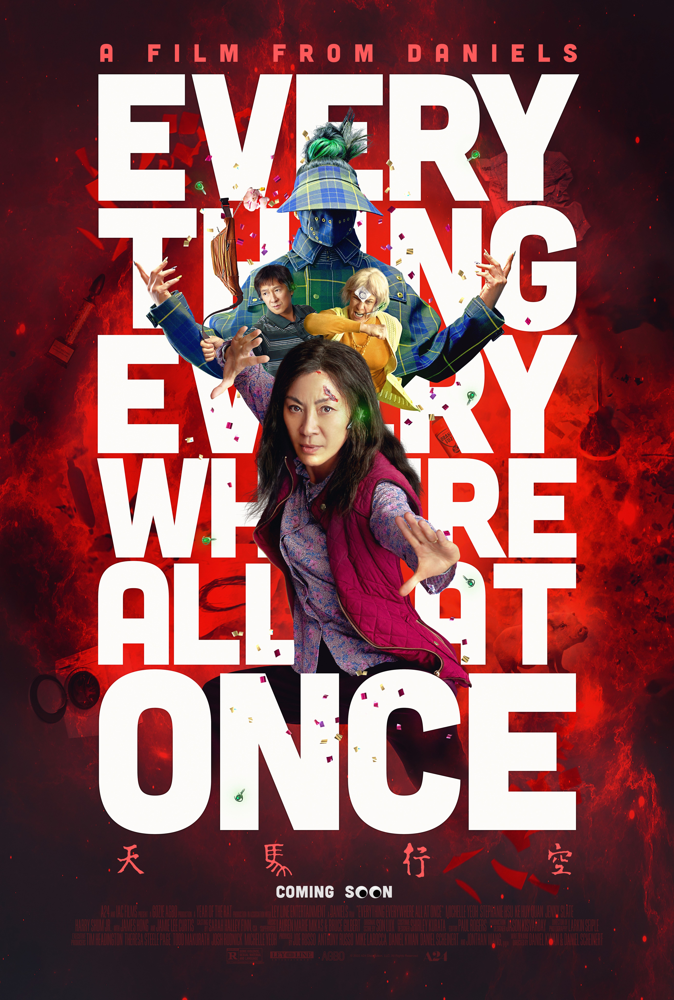

One of my favorite movies is "Everything Everywhere All at Once"
Everywhere All at Once is a 2022 American absurdist comedy-drama film written and directed by Daniel Kwan and Daniel Scheinert, who produced it with Anthony and Joe Russo and Jonathan Wang. The film incorporates elements from several genres and film media, including surreal comedy, science fiction, fantasy, martial arts films, immigrant narrative, and animation. Michelle Yeoh stars as Evelyn Quan Wang, a Chinese-American immigrant who, while audited by the IRS, discovers that she must connect with parallel universe versions of herself to prevent a powerful being from destroying the multiverse. The film also stars Stephanie Hsu, Ke Huy Quan, Jamie Lee Curtis, and James Hong.
Here are the top 3 reasons why I love this movie so much

- The main character has the same name as my mom and looks like her too
This made it feel like I was watching a movie about the relationship that I have with my own mom. So it made it a very emotional experience for me.
-
The jokes and humor are so bizarre and unexpected
This was refreshing to see since modern movie jokes feels like they follow the same predictable and boring template.
-
The amount of creativty in the montages
There were so many different stlyes and references used in this movie and it felt like there was a new sequence every 5 minutes, which was so inventive and keep me invested in the movie.